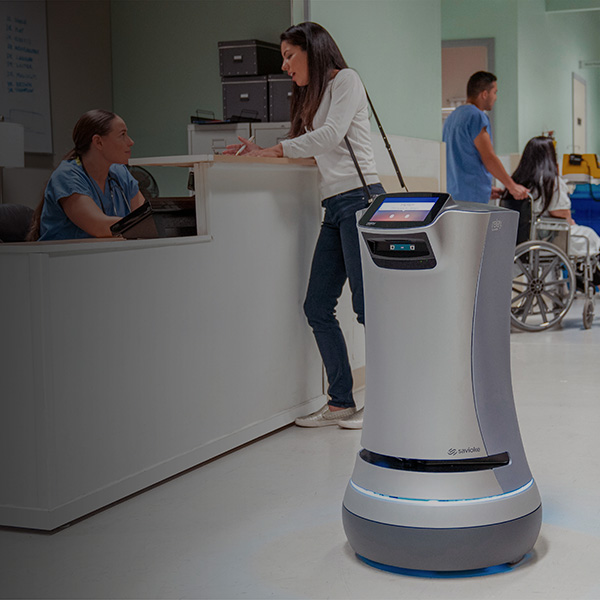

Intro
The Company
In 2016, I joined Savioke, a venture-backed robotics startup focused on creating service robots for indoor delivery. The founding team had developed Relay, a nimble and friendly robot for just-in-time delivery of small items in hotels.
The Challenge
Back in 2016, Savioke had approximately 40 robots deployed in various locations around the world. The company was poised for rapid growth, with strong interest across multiple geographies and industries. It was consistently recognized for pioneering the indoor delivery space, and outside parties were eager to procure a Relay robot for testing in new applications.
But these robots were a beta design, and the company recognized the need for a design overhaul to meet production requirements. The mechanical engineering on the beta design had been led by an external design team. It was functional but not scalable for meeting larger manufacturing and in-field demands. The robots were in critical need of reliability, serviceability, and manufacturability improvements. In-field repairs were already proving costly, as they often required either sending a trained technician out to a customer site or shipping a robot back to Savioke’s HQ.
My Role
As Principal Mechanical Engineer and later ME lead at Savioke, I tackled “all things mechanical” within the company. At a high level, this included:
- Development of an improved, production-ready Relay design
- Technical troubleshooting on weekly issues associated with Relay Beta units already deployed out to customers
- Brainstorming and feasibility analysis of new product ideas and features
The Solution
During my time at Savioke, I completed work on the design and manufacturing of the first few production lots for the new Relay design. This design (known internally as Relay 1.5) integrated notable improvements for reliability, serviceabilty, and fit while still appearing largely unchanged to the end customer. This was an important business decision, because the Relay Robot had developed such a strong brand following.
Design improvements I made can be grouped into several categories:
- Reliability improvements
- Design of a new lid mechanism for payload access
- Design of an improved latch mechanism for payload access
- Design of a custom touchscreen assembly
- Design improvements to the robot's base
- Serviceability improvements
- Fit improvements
- Resurfacing of all outer plastic parts
- Tolerance analysis
- Reevaluation of chosen manufacturing process
- Manufacturing improvements
- Implementation of better manufacturing controls for torque, loctite, and workflow
- Creation of 2D drawings with critical-to-function dimensioning
- Documentation updates and technical support for CE compliance and certification
The Results
With the improved Relay Robot design, the majority of the mechanically-related issues seen with Relay Beta were addressed. As a company that has successfully raised Series B, Savioke is in growth mode. In my time with the company, the fleet size more than tripled. In the hospital setting, Relay is providing nimble point-to-point delivery, reducing the logistical burden for healthcare workers. Savioke is betting big on growth potential in hospitals via their partnership with Swisslog Healthcare. I am proud to have been able to contribute to design improvements that will assist their growth trajectory.